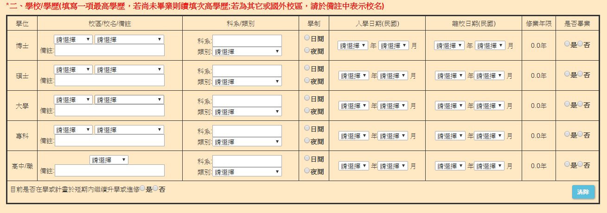

學習
1.VB6.02.C#
3.Oracle SQL Developer
4.Lotus Notes
5.Crystal Report
6.Asp.Net
7.Javascript
8.JQuery
工作目標
為公司打造專屬人力資源部的人才庫，目前公司聘雇流程為投歷->應徵->面、筆試->跑簽核，但以往公司是採用人力跑完這些全部流程，所以公司目前有想走全方面自動化這一塊，而我這暑期被交付的工作在屬於投歷那一區塊的自動化，也就是所謂履歷網頁平台，經過E化之後，人資可以簡單的操作網頁，將履歷存入資料庫中，配合UI介面也可以輕易查詢出該履歷。不但如此，再上傳履歷、填寫履歷、匯出履歷這方面，都可以採批次執行，匯入、匯出多個EXCEL檔。但我這只是一小塊部分，還有其他流程需要靠其他同仁努力，最後在串接起這全部小系統成為一個大系統，我期許自己能為公司加快流程，並在10月初可以第一次與其他相關系統結合，先測試還有甚麼問題，此外，這個專案也有機會參加公司內部的專案比賽，希望可以成功整合系統並在比賽中能獲得佳績。
1.完成履歷平台:希望可以在10月底前完成，包含USER與ADMIN端的各項功能，包括USER填表、ADMIN匯入匯出報表、ADMIN查詢功能並修改、ADMIN維護參數。
2.新挑戰：在11月~實習結束前，希望可以再接手一個PROJECT，希望主要以視窗或網頁為主，因為目前對這兩塊比較有興趣，希望可以藉剩下的時間，在加強這兩部分。
3.轉正職:目前與公司其他員工相處不錯，也有認識到不同部門的人，希望可以畢業後繼續待日月光，為公司服務，開發及維護更大的程式。
工作詳述
首先，履歷平台介面分USER跟ADMIN不同的操作。先針對USER部分。
USER端登入進去之後，即到履歷填寫部分。匯入檔案中是供上傳大頭照或由其他專業相關文件

ADMIN端比較常用，功能也比較多。主要是三大功能1.匯入EXCEL檔2.查詢履歷並有匯出功能3.提供維護參數的地方(例:校區，校名，科系、產業的資料來源)
首先是匯入EXCEL，跟USER端同個介面，差別在於可提供直接匯入EXCEL功能，即人資收到應試者回傳的EXCEL檔後，可以直接匯入網頁中並儲存進資料庫。
當資料庫比數資料很多時，可利用條件查詢縮小範圍，圖中”選取”可進入該履歷資料，方便列印及修改資料。最後也有匯出報表功能(開發中)，可以選取特定比數，匯出後依照欄位形成報表格式。

在填寫學歷及工作經歷時，下拉式選單中的資料來源可供人資部門員工自行維護(新增、修改、刪除)，目前針對學校、科系、產業類別維護。

在暑假的期間，又有新的工作要接手，撰寫HR的履歷平台，我是利用ASP.NET去架設這個平台，因為是接手前一個工讀生未完成的工作，我透過已經寫好的語法更迅速的了解整個平台的作業流程與內容大致走向，使我在暑假接手的這個工作上能更快速的上手。若是以先前的翻譯系統工作與履歷平台撰寫工作兩者相互比較，先前的翻譯工作較為簡單，但因可取得的資源與自己的能力背景在這方面較不足夠，所以上手的速度較慢，學習起來較為吃力。而平台撰寫工作雖然較為困難，但因在學校有修習網頁程式設計的課程，又加上已有前人大致上寫出的內容與方向，再透過自行上網找尋問題解決方式，整體的工作算是十分的得心應手。但學無止境，尤其是資訊相關行業，更是每天都在更新。每當我翻譯完一段落的程式碼，或是寫出一小部分的語法後，下一段也許又是一個新的挑戰，需要我去理解更多不同的資訊，如同一個輪迴，並須每天不斷逼自己前進。公司部門的氣氛融洽，同事對我也頗為照顧，即便各自忙碌，但仍會關心我給我鼓勵，讓我緊張又有些許畏懼的心情放鬆不少。但因實習時間為每個星期的一到三，往往下個星期回到工作岡位時會因接軌上次的工作而需要花點時間才能步回原軌。
慢慢地，我可以達到了主管的期望，我很開心也覺得我的付出很值得，雖然現在工作都是在做同一件事，但熟能生巧，以前翻譯系統遇到的困難也都一一化解，現在算是很平順的在進行翻新。目前專案雖然可能還需要二個月時間來完成並除錯，但我很期待完成專案之後會遇到新的挫折，並在遇到它之後再次將他征服，因為這些可以使我被大家認同，亦會是將來步入職場的硬實力。

1. 新人進入公司時，可由一個相同工作性質的督導員帶領，這樣可在有問題時及時得到解決的方式
2. 公司可準備一本新人手冊，內容可包含新人進入公司時必須了解及學習的基本知識，以組區別，例如ERP組，可在手冊內簡介公司所用的資料庫語言，程式語法等內容，讓新人可更快的上手自己的工作
3. 給系上的建議，暑期的實習報告與上學期的期末報告雷同性過高，因繳交報告的時間與上學期的期末報告繳交時間過於接近，報告的作用著實不大
4. 給系上的建議，廠商回饋評估表建議可由公司直接傳給學校，不要透過學生交回，因為這樣可能無法呈現真實的評語
5. 給系上的建議，因學校位於桃園，大部分同學在桃園與台北的權衡下，還是桃園會方便許多，但台北的實習機會卻多於桃園，如此一來除了北部人可在實習期間住回家中以外，其餘同學不是要舟車勞頓便是要在北部公司附近租房子，因此希望系上爾後能再提共較多的桃園實習機會